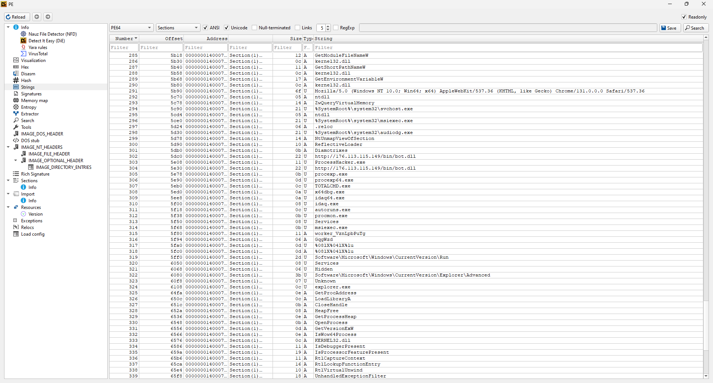

Redline Infostealer Analysis
Introduction
Redline is a malware family that has been active since 2012. It is a data stealer that is capable of exfiltrating sensitive information from the victim's machine. The malware is written in C++ and is often packed with a custom packer and loaded on the victim's machine through various loading and defense evasion mechanisms. The malware is capable of stealing sensitive information such as credentials, cookies, and browser history. The malware is also capable of taking screenshots of the victim's machine.
First stage: Downloader
Basic static analysis
The sample under analysis (SHA1:d6ae1c5d0bf5d7784c775ee833ec63756c77bdae) is flagged as a generic Trojan Downloade by most AV suites or as Fareit by some of them. It is a EXE file built for x86-64 Windows systems. We first analyze its capabilities using capa. The output of the tool is shown below:
| md5 | ae81456496d974ac77aa11fcd2de8b0f |
|---|---|
| sha1 | d6ae1c5d0bf5d7784c775ee833ec63756c77bdae |
| sha256 | 81be001c01d1fae33deab1c542661e90f07be5ae168f8220415063d26cd578ca |
| analysis | static |
| os | windows |
| format | pe |
| arch | amd64 |
| path | C:/Users/User/Downloads/81be001c01d1fae33deab1c542661e90f07be5ae168f8220415063d26cd578ca.exe |
| ATT&CK Tactic | ATT&CK Technique |
|---|---|
| DEFENSE EVASION | Obfuscated Files or Information::Indicator Removal from Tools [T1027.005] |
| DISCOVERY | System Information Discovery [T1082] |
| EXECUTION | Shared Modules [T1129] |
| PERSISTENCE | Boot or Logon Autostart Execution::Registry Run Keys / Startup Folder [T1547.001] |
| MBC Objective | MBC Behavior |
|---|---|
| ANTI-STATIC ANALYSIS | Executable Code Obfuscation::Argument Obfuscation [B0032.020] |
| Executable Code Obfuscation::Stack Strings [B0032.017] | |
| COMMUNICATION | HTTP Communication [C0002] |
| HTTP Communication::Read Header [C0002.014] | |
| DISCOVERY | Analysis Tool Discovery::Process detection [B0013.001] |
| Code Discovery::Enumerate PE Sections [B0046.001] | |
| System Information Discovery [E1082] | |
| PERSISTENCE | Registry Run Keys / Startup Folder [F0012] |
| Capability | Namespace |
|---|---|
| reference analysis tools strings | anti-analysis |
| contain obfuscated stackstrings | anti-analysis/obfuscation/string/stackstring |
| reference HTTP User-Agent string | communication/http |
| check HTTP status code | communication/http/client |
| check OS version | host-interaction/os/version |
| link function at runtime on Windows | linking/runtime-linking |
| enumerate PE sections (2 matches) | load-code/pe |
| resolve function by parsing PE exports (2 matches) | load-code/pe |
| persist via Run registry key | persistence/registry/run |
We can see that it has some basic capabilities such as comunicate with a HTTP server as well as to establish persistence using the Registry run key as well to detect processes for Anti-Analysis purposes.
Next, we will analyze the strings of the sample using DetectItEasy. The output of the tool is shown below:
We can see that the sample contains strings relative to the aforementioned techniques, such as an URL for the C2 server to a dll named "bot.dll" (SHA1: 78bdad1cf98759ec9dbcc1888cdaa2f7fccfcdbc). Its IP - "176.113.115.149" - refers to a server loacted in Russia. The process names of famous analysis tools such as x64dbg and Process Hacker are also present, presumably to evade analysis. It also makes use the registry run key to achieve persistence. Additionally, it mentions explorer.exe probably to achieve process injection. Finally, the use of reflection to load the malware is also probably exploited.
The PE of the executable contains six sections beside the Header and the entropy measurement indicates that none of them are packed. The sample was compiled with Microsoft Visual C/C++ (17.00.50727) [C++], linked with Microsoft Linker (11.00.50727) and written using Visual Studio 2012.
Basic dynamic analysis
Next, we analyze the sample by running it in a controlled environment. We use Process Monitor to monitor the file system, registry, and, with also Wireshark, network activity of the sample. To analyse the sample, it's anti-analysis functions were patched so to not detect the analysis tools. The output of the tool is shown below:


After this, the malware relaunches itself as "msiexec.exe" after setting environment variables. Also it downloads a .exe file with a temp name to %AppData%.
Then a whole suite of malicious executables are downloaded and executed on the system. In particular the following .exe are downloaded

While an in depth analysis for each of these files was not carried, it can be said that each has a set of exported functions or internal routines that aim to steal data in different ways, including scanning user folders, capturing screenshots, injecting web pages, and stealing cookie. Each of these executables has capabilities to send data to the C2 server independently.
We observe evidence of that in the Procmon logs, which indicates that one of these samples collected screenshots and builded in its install path - %ProgramData% - a set of folders regarding famous programs of various categories (including FTP clients, and Messaging apps) and then packed the logs to a .zip file and then uploaded it.
.png)
.png)
Advanced static analysis
Second stage: Bot
| md5 | 245749553e7194636b0f78e7dea115ef |
|---|---|
| sha1 | 78bdad1cf98759ec9dbcc1888cdaa2f7fccfcdbc |
| sha256 | 4b7e4232fec31a80cdccada106516e45a38d97ae18fbba586d4bec41c0bad823 |
| analysis | static |
| os | windows |
| format | pe |
| arch | amd64 |
| path | C:/Users/User/Downloads/bot.dll |
| ATT&CK Tactic | ATT&CK Technique |
|---|---|
| COLLECTION | Archive Collected Data::Archive via Library [T1560.002] |
| DEFENSE EVASION | File and Directory Permissions Modification [T1222] |
| Obfuscated Files or Information [T1027] | |
| Indicator Removal from Tools [T1027.005] | |
| Process Hollowing [T1055.012] | |
| Thread Execution Hijacking [T1055.003] | |
| Reflective Code Loading [T1620] |
| MBC Objective | MBC Behavior |
|---|---|
| ANTI-BEHAVIORAL ANALYSIS | Debugger Detection::Software Breakpoints [B0001.025] |
| ANTI-STATIC ANALYSIS | Executable Code Obfuscation::Argument Obfuscation [B0032.020] |
| Executable Code Obfuscation::Stack Strings [B0032.017] |
| Capability | Namespace |
|---|---|
| check for software breakpoints (2 matches) | anti-analysis/anti-debugging/debugger-detection |
| contain obfuscated stackstrings | anti-analysis/obfuscation/string/stackstring |
| parse credit card information | collection/credit-card |